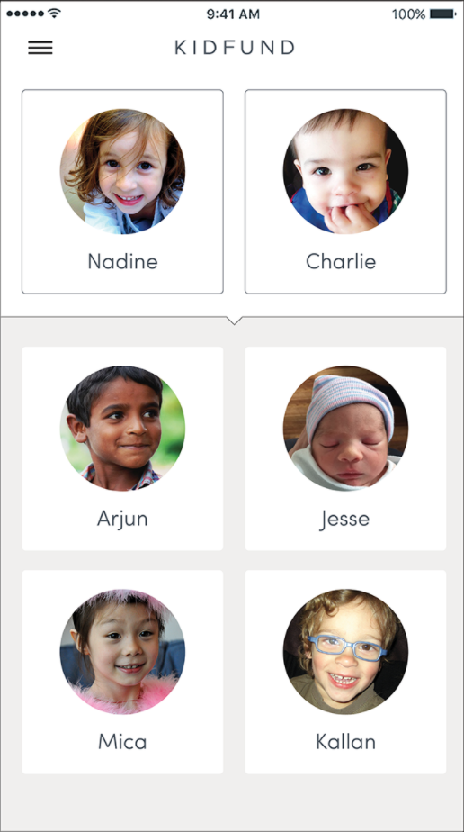

Disclaimer: This project is ongoing, so not all details are able to be disclosed and results/solutions have not yet been finalized. Analysis continues through February 2018.
Kidfund is a social savings app that encourages families to save money for their children's future expenses. Remembering to contribute to a savings account is difficult, and Kidfund's aim is to reduce friction by helping parents sign up for and contribute to a dedicated savings account. The app also allows for an extended social network to contribute toward the savings account, so family and friends can join together in funding a solid financial future.
I am currently working with KidFund on their first round of dedicated user research to discover and improve pain points surrounding the onboarding process. The current onboarding flow provides first-time users a walkthrough of the app’s functionality via the funding of a sample account. The walkthrough shows users how to create a profile, set up a savings account, and link a funding account. However, up to this point, there has been no evaluation of the onboarding flow’s success in allowing users to complete their startup journey and set up their own account.
Obtain an overall impression of Kidfund from users prior to diving into the onboarding flow
Does the onboarding flow make sense to users?
What is confusing?
What alternate language or visuals would users suggest?
Does the onboarding process make sense as a whole?
After going through the flow, are users able to set up an account?
Can users navigate the setup process on their own?
Are there points of friction or uncertainty?
What do users do when they don’t understand what to do next?
I am in the process of conducting 30 minute in-person study sessions. In the study, participants walk through the onboarding prototype while following tasks designed to gauge successful completion of the account creation process.
Introduce Kidfund’s concept
Capture general high-level impressions
Set context for study (“Imagine you’re setting up a new savings account for your kid”)
Present and observe progression through onboarding flow
Present tasks to gauge onboarding success (i.e. account creation)
Probe to understand what participants would like to do next
My goal is to interview a total of 8 participants, all of whom fit the following profile:
Parents of children aged 0-10, or very soon to be parents
iPhone or Android users (Kidfund is currently available for iOS only, and will soon expand to Android)
I am recruiting participants through friends and family who know folks who fit our target profile, and also through log data in collaboration with Kidfund's software engineer.
Participants are sent an initial screener to collect preliminary data, as well as calibrate certain interview questions.
Sessions are being conducted both remotely and in-person, depending on participant location.
Sessions are audio recorded (and also video recorded, where possible)
Incentivation is offered in the form of a $15 Starbucks giftcard.
While results are not yet available, my hypothesis given current study progress is that the existing onboarding process does not sufficiently prepare new users to successfully complete all critical tasks. After analysis is complete, my plan is to synthesize onboarding pain points and surface a series of recommendations to the design team.